P5 旋钮（旋转）
第三个零件：旋钮。旋钮是圆的、绕轴对称，最适合用“旋转”来做：画半个截面，转一圈。再用环形阵列做一圈防滑槽，最后挖一个六角坑卡住螺丝头。
做完这一页：
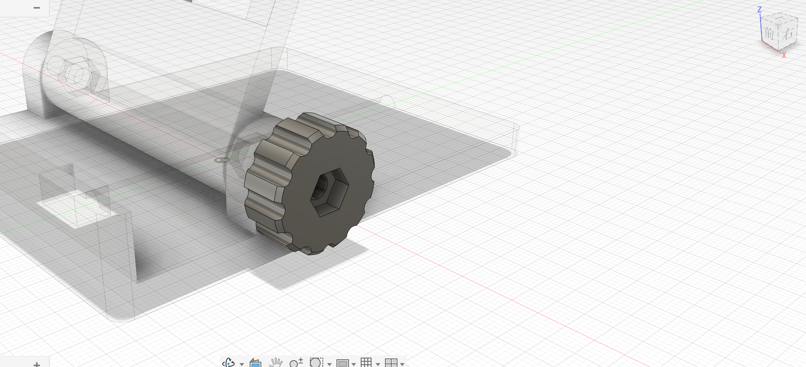
第 1 步：一个过铰链轴的平面#
旋钮的轴就是铰链轴（离桌面 14.4 mm、沿左右方向）。截面要画在一个通过这根轴的平面上，现成的平面里没有，用构造平面建一个水平的：
- 激活根，「装配 → 新建零部件」，名称
旋钮。 - 「构造 → 偏移平面」：点 XY 平面，距离
14.4，点「确定」。
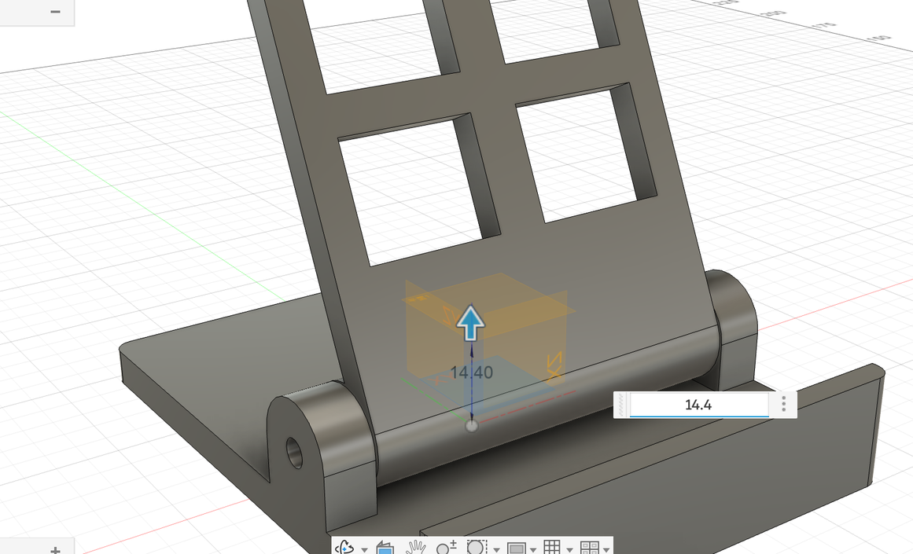
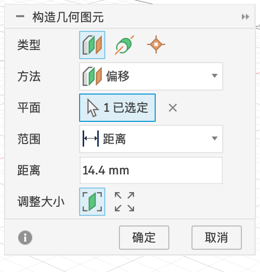
第 2 步：截面#
旋转需要两样东西：一根轴，和轴旁边的半个截面。旋钮就是一个中间有孔的圆饼，它的半个截面是一个矩形：
- 在这个新平面上「创建草图」，点 ViewCube 的「上」，变成俯视。
- 先画轴：「直线」画一条左右方向的水平线，从右耳附近一直画到右耳外面一点；选中它，在草图选项板点「线型」里的构造线图标，它变成虚线。按 D，点这条线和原点，标距离
15，它就正好落在铰链轴上（铰链孔离底座前边 35，底座前边离原点 50，50 − 35 = 15）。 - 再画矩形：「两点矩形」在轴的后面（远离你的一侧）、右耳外侧画一个小矩形。
- 按 D 标 4 个尺寸：
- 矩形左右宽
9（旋钮的厚度）； - 矩形左边到原点
40（右耳外侧面的位置，正好是底座宽 80 的一半，旋钮贴着耳朵）； - 轴到矩形远边
11（旋钮半径）； - 轴到矩形近边
2.2（螺丝孔的半径）。
- 矩形左右宽
- 「完成草图」。
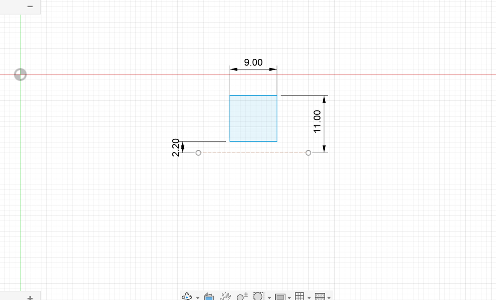
第 3 步：旋转#
- 「创建 → 旋转」。「轮廓」点矩形，「轴」点那条构造线。
- 「范围类型」选「完全」，点「确定」。
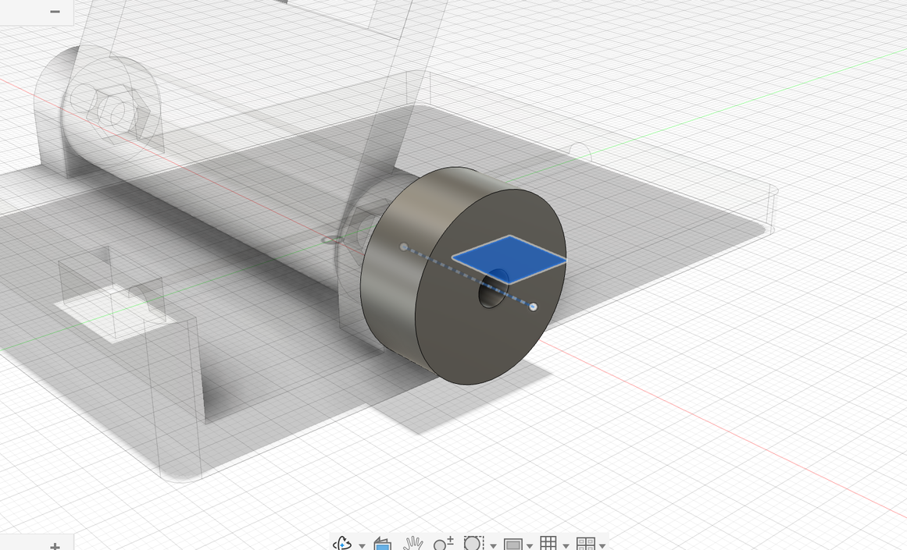
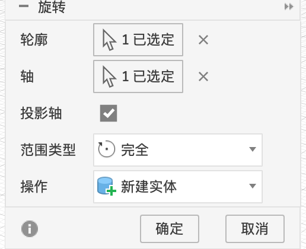
旋转对话框每一项的含义见 1.2 旋转。
第 4 步：防滑槽 + 环形阵列#
- 在旋钮的外侧面（离耳朵远的那一面）建草图。「圆」：圆心点在外圆的最上面（鼠标移到外圆上会吸附，出现重合图标），画一个小圆，按 D 标直径
3.2。小圆一半在旋钮里、一半在外面。
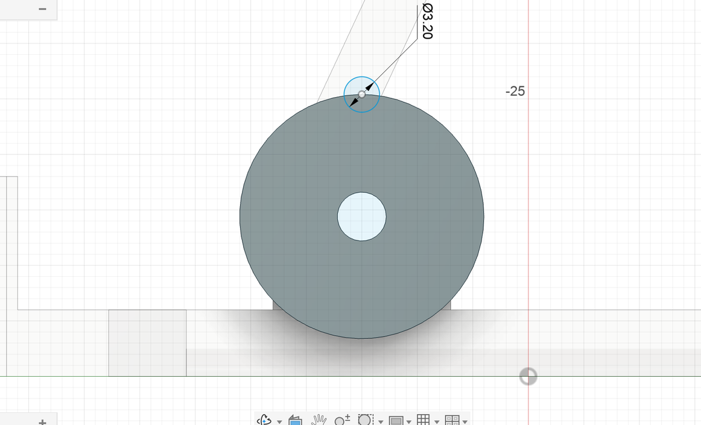
- 按 E，点小圆里落在旋钮上的那半块，「操作」选「剪切」，「范围类型」选「全部」，方向朝旋钮里面。注意：“全部”会一直往里挖，连后面的耳朵、靠背也会被挖到。看对话框里的「要剪切的对象」，只留下「旋钮」，其他的点掉。点「确定」，旋钮边上被挖出一道半圆槽。
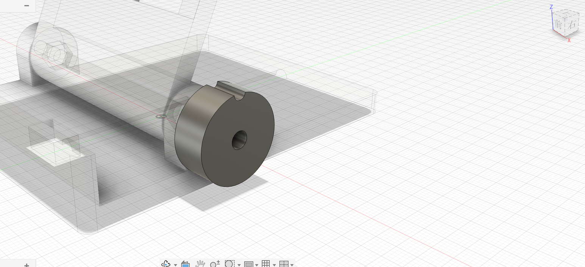
- 选中这道槽的剪切特征，「创建 → 阵列 → 环形阵列」。
- 点「轴」的选择按钮，再点旋钮的圆柱外表面（用它的中心线作轴）；「数量」改成
12。点「确定」。
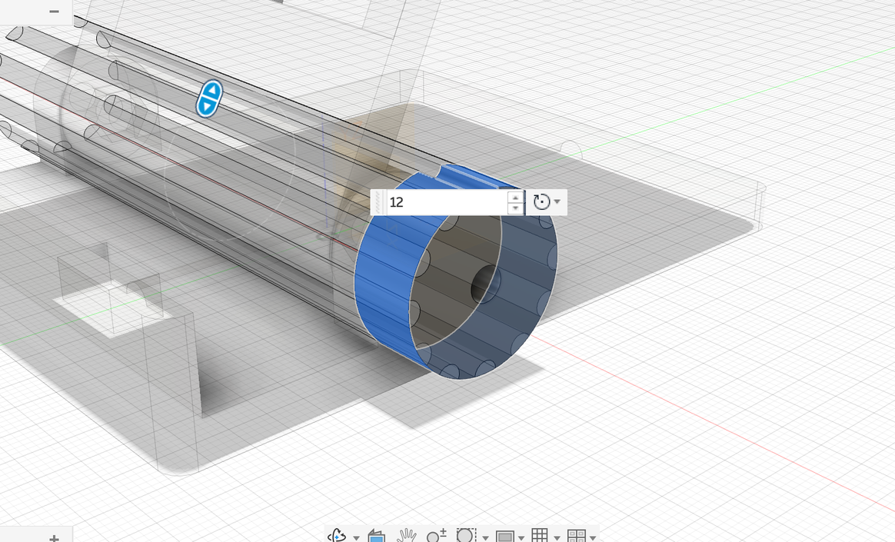
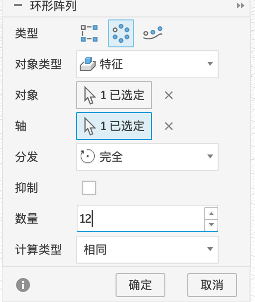
环形阵列
| 选项 | 含义 |
|---|---|
| 对象类型 / 对象 | 和矩形阵列一样 |
| 轴 | 绕哪根轴转。可以选构造轴、坐标轴、草图线，或者直接点一个圆柱面（用它的中心线） |
| 分发 | 完全（一整圈均匀分布）/ 角度（只在一段角度里分布）/ 对称 |
| 抑制 | 勾选后可以去掉个别复制品 |
| 数量 | 一圈复制几个（包括原来那个） |
| 计算类型 | 相同 / 调整 / 优化 |
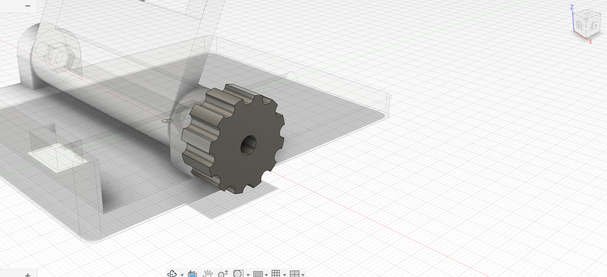
第 5 步：六角坑和倒角#
- 在旋钮外侧面建草图，「多边形 → 内接多边形」，圆心在孔心，6 条边，对边
7.3。
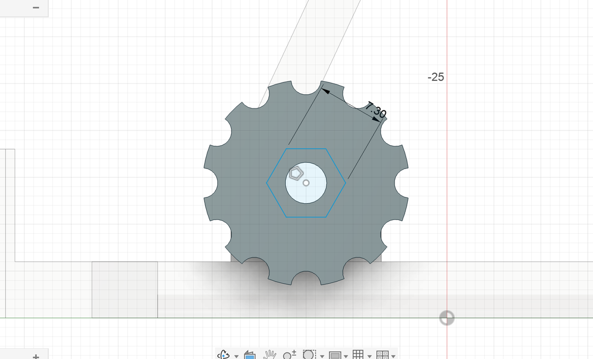
- 拉伸六边形「剪切」，往里
3mm。 - 「修改 → 倒角」：选外圈的两条圆边，距离
0.8，点「确定」。手感更好，也不扎手。
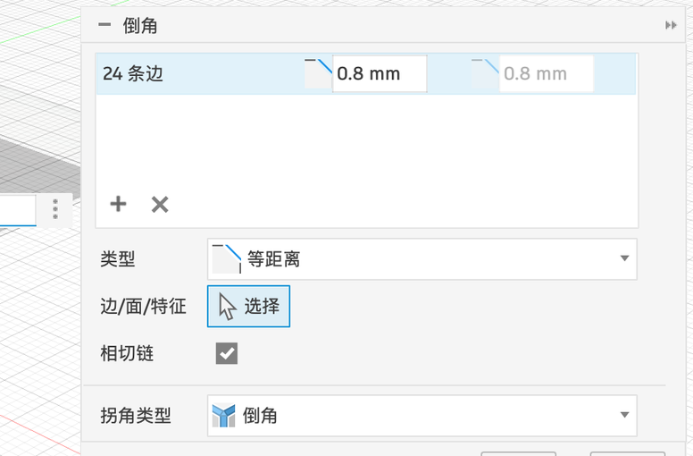